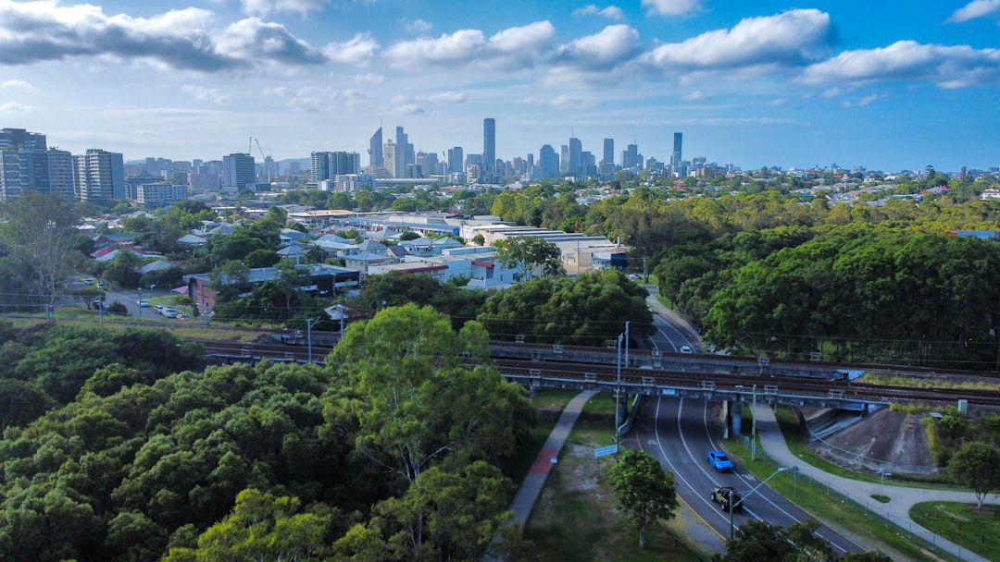

For Brisbane and South East Queensland owners, the sourced brief is usually a wall, a fence, or both. The published page names 4 service regions, 3 main retaining wall materials, and ageing cut-and-fill walls in the 30 to 60 year range. It also gives timber sleeper guidance from around $300 to $450+ per square metre. The practical decision is whether the quote separates approvals, engineering assumptions, drainage, excavation, backfill and any fence above the wall.
When homeowners compare retaining wall installation brisbane options, the useful starting point is the actual site problem: slope, access, drainage, wall height, what sits behind it, and whether a fence must be built with it.
Retaining Wall Installation Brisbane Explained
QLD Retaining and Fencing describes many sloped blocks as two linked jobs: a wall holding ground back and a fence that may need to sit above it. A useful brief starts with the physical constraint, not the preferred finish. Height, length, access, drainage and what sits behind the wall all affect the quote.
Before asking for prices, record the suburb, rough height and length, slope direction, truck or machinery access, and whether the wall is near a driveway, pool area, boundary fence or gate. If an existing wall is leaning, bulging or rotted, photograph the face, top edge, posts, drainage points and ground behind it.
- Wall purpose: garden edge, boundary support, driveway support, pool area or replacement.
- Fence relationship: whether a boundary, privacy or pool barrier sits above or beside the structure.
- Quote inputs: material, excavation, drainage, backfill, access and approval checks.
Approval Questions To Ask Early
The published guidance says approval and engineering triggers should be checked before a number is quoted. That order avoids comparing a low garden wall with a structural wall carrying extra load. It also notes that a fence sitting on a retaining wall is assessed on combined height.
Ask the contractor to identify the approval trigger checked for the actual site, the engineering assumption used, and whether the fence is included in the same assessment. A wall holding up a driveway or pool is described as carrying surcharge load, meaning weight pressing down behind the wall face.
Where pool fencing is part of the job, keep it separate from ordinary boundary fencing. The page says compliant pool barriers are built to the QLD pool safety standard and prepared for inspector sign-off.
Material Choice Without Guesswork
The page names timber sleeper, concrete sleeper and core-filled besser block retaining walls. Timber sleeper walls are described as H4 treated-pine terraces for garden edges and lower cuts. Concrete sleeper walls use reinforced concrete panels between galvanised posts for taller Brisbane and hinterland cuts. Core-filled besser block is hollow masonry with steel bars grouted into the cores, used where timber and segmental block fall short.
The better comparison is the whole build, not the visible face alone. Ask how posts or footings, drainage, backfill, access, fence integration and engineering are allowed for. For a related editorial checklist, this Brisbane retaining wall installation guide looks at similar owner questions.
Quote Items That Should Be Visible
The page says written quotes should be itemised, with excavation, drainage and backfill separated rather than buried. That helps owners compare the same scope. Retaining wall pricing is not just panels, sleepers or blocks. The hidden work behind the wall can change the build method and the final price.
Ask for subsoil drainage to be named, because the published page treats it as structural on every retaining wall quote. Check whether spoil removal, backfill, fencing, gates, pool barriers, approval checks and engineering assumptions are included.
- Confirm height and length are measured the same way across quotes.
- Separate retaining, fencing, gate and pool barrier items.
- Ask which approval and engineering triggers were checked.
- Note any access limits affecting labour, machinery or delivery.
Who This Applies To
This guide suits South East Queensland owners dealing with a sloped block, an ageing wall, a fence above a retaining structure, or a quote that is difficult to compare. The page names work across Brisbane, Ipswich, the Gold Coast and the Sunshine Coast.
Its local examples are practical: Brisbane ridge-and-gully blocks off the Taylor Range with older cut-and-fill walls, Ipswich reactive clay near the Bremer and Greater Springfield estates where wall and fence often go in together, Gold Coast canal and lake-edge fill with salt air affecting fence hardware, and Sunshine Coast sites including Buderim basalt clay, soft river flats and a council that asks for a permit on most retaining walls.
- Describe the block. Give the suburb, rough height and length, slope direction, access limits and what sits behind or above the proposed wall.
- Separate the scope. Ask whether retaining, fencing, gates, pool barriers, excavation, drainage and backfill are each itemised.
- Check triggers early. Request the approval and engineering assumptions before comparing the final price.
- Compare like for like. Line up material, drainage, access and fence integration before treating one quote as cheaper.
| Option | Sourced fit | Questions to ask |
|---|---|---|
| Timber sleeper | H4 treated-pine terraces for garden edges and lower cuts | Is the height, drainage and access suited to this site? |
| Concrete sleeper | Reinforced concrete panels between galvanised posts for taller Brisbane and hinterland cuts | What post system, drainage and engineering allowance is included? |
| Core-filled besser block | Steel-reinforced masonry for taller structural retaining where timber and segmental block fall short | What footing, reinforcement, grout and approval details are allowed for? |
Common questions
What details should I provide before asking for a retaining wall quote? Provide the suburb, approximate height and length, what is above or behind the wall, whether a fence or gate is involved, and how machinery or deliveries can access the site.
Can a retaining wall and fence be quoted together? Yes. The published page treats many sloped blocks as a combined wall and fence job, especially where a fence sits on top and combined height needs to be considered.
Which retaining wall material should I compare? The listed options are timber sleeper, concrete sleeper and core-filled besser block. The right comparison depends on height, load, access, drainage, approval triggers and whether the wall supports a fence, driveway or pool area.
What should be itemised in a quote? Ask for excavation, drainage, backfill, wall material, fencing or gate components, and approval or engineering checks to be shown separately.
This guide covers owner-level planning for retaining walls, fencing, quote comparison, drainage and approval questions in Brisbane and South East Queensland.